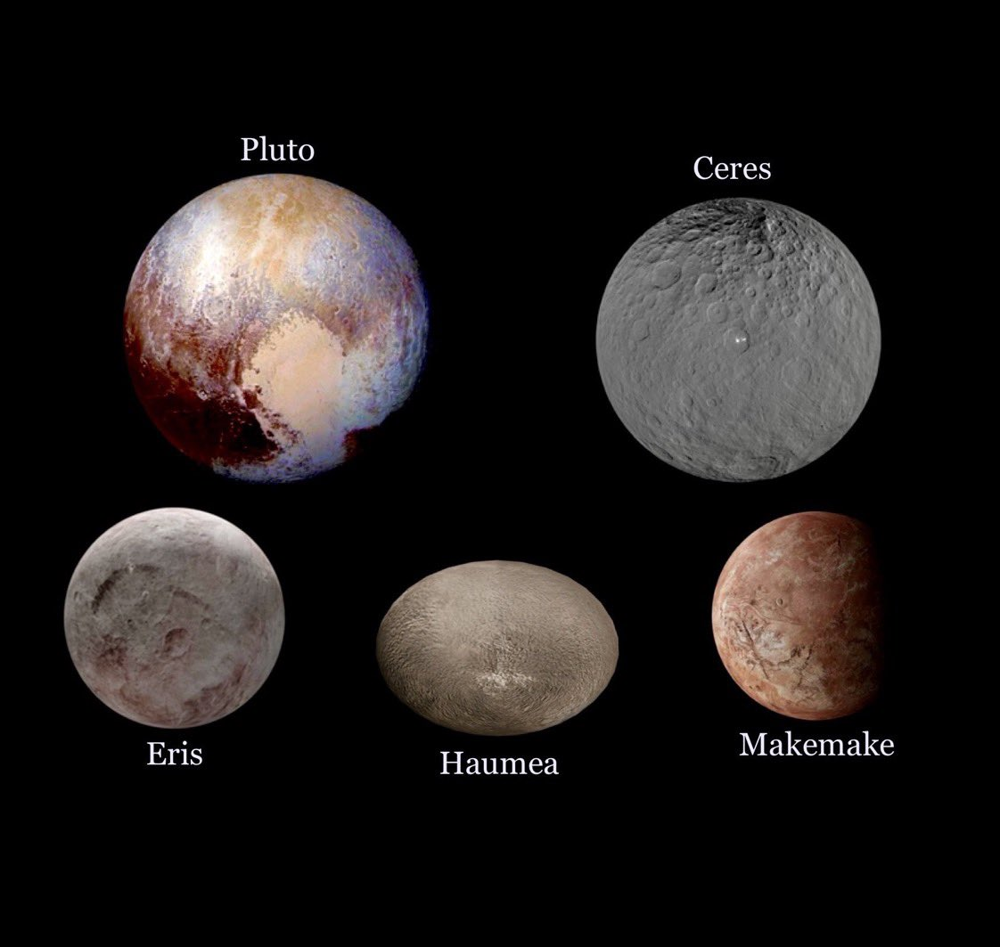
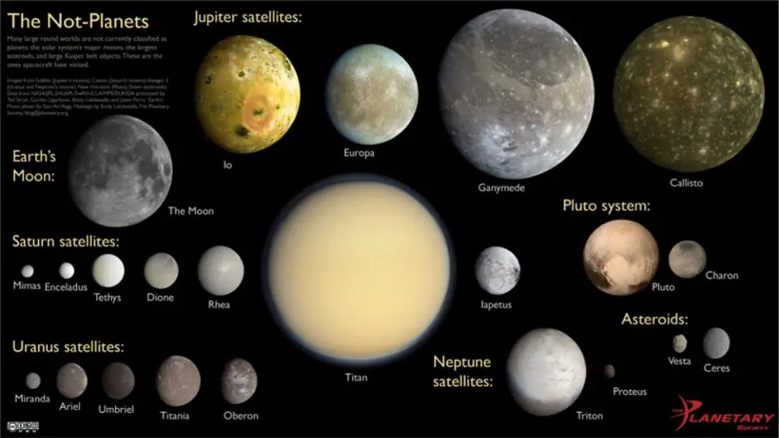
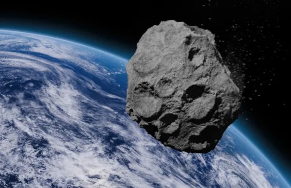
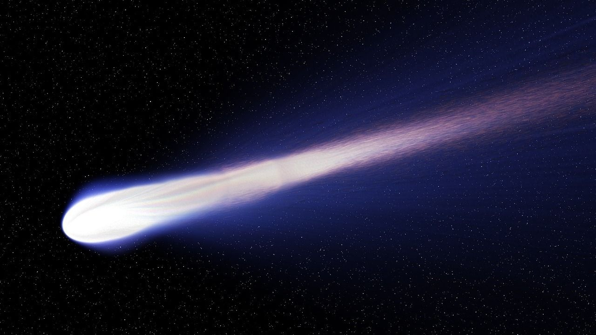
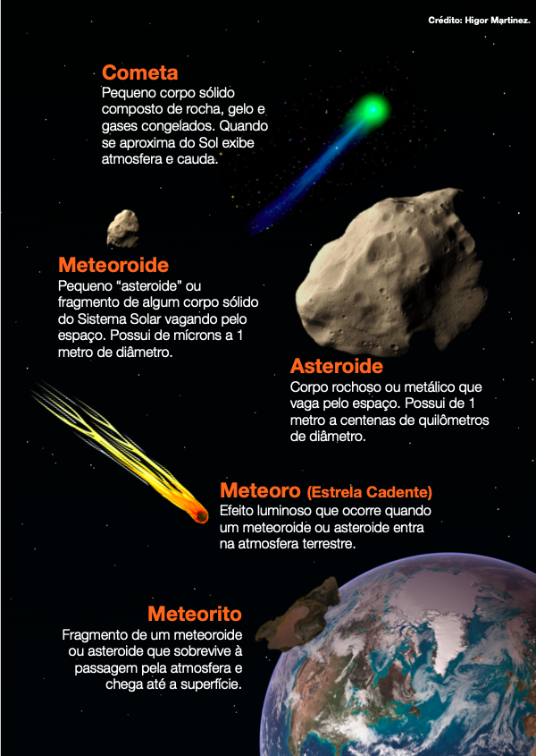

-
Planetas anões

A identidade de Plutão foi questionada por anos pelos cientistas. Durante muito tempo, foi
considerado o planeta mais frio e distante do Sol, o nono planeta do Sistema Solar. Entretanto,
em 2006, Plutão foi "rebaixado" e recebeu da União Astronômica Internacional (UAI) uma nova
classificação: "Planeta Anão".
De acordo com as novas regras, o planeta deve obedecer três critérios: deve orbitar o Sol; deve ser grande
o suficiente para a gravidade moldá-lo na forma de uma esfera; sua vizinhança orbital deve estar livre de
outros objetos.
Assim, como Plutão possui uma gravidade branda que não faz a "limpeza" de seu arredor, possuindo muitos corpos celestes
orbitando em conjunto, não se adequou aos critérios para sua definição como planeta. Os astrônomos
afirmam que, assim como Plutão, podem existir milhares de corpos celestes no Sistema Solar. Um deles
é chamado Éris, descoberto em 2003, por uma equipe de pesquisadores americanos.
Anteriormente, era denominado pelo registro astronômico 2003 UB313, o que seria o "décimo planeta"
e está a 14 bilhões de quilômetros da Terra. O nome Éris é referente à deusa grega da discórdia.
-
Satélites Naturais

Diversos satélites orbitam em torno dos planetas. De acordo com a cosmologia, a Lua, o satélite
natural da Terra, deve ter se formado ao mesmo tempo que a Terra e os outros astros do Sistema Solar.
A principal hipótese é de que a Lua tenha sua origem numa colisão entre a Terra e outro astro do Sistema Solar.
Os fragmentos resultantes dessa colisão formaram a Lua, a qual foi atraída pela gravidade da Terra e gira ao seu redor.
A Lua é o astro mais próximo da Terra. A distância exata entre os dois astros é calculada em quilômetros e não em ano-luz.
-
Asteroides

Corpos que apresentam movimento próprio, a maioria já catalogada apresenta órbitas elípticas e
encontra-se no cinturão de asteroides entre Marte e Júpiter. O seu tamanho pode ser calculado por
meio da medida da quantidade de luz que ele reflete. Apenas 16 asteroides, dos mais de 3000 catalogados,
apresentam dimensões superiores a 240 km. Seu brilho não é constante devido à reflexão solar.
-
Cometas

Corpos constituídos por uma parte sólida chamada de núcleo que é formado por gelo e impurezas.
Sua forma é irregular, e são bastante extensos. São compostos especialmente por água e, conforme
se aproxima do Sol, o gelo existente no núcleo sofre evaporação, ejetando grãos de poeira que acabam
por refletir a luz solar, dando, então, o aspecto brilhoso ao cometa. Eles possuem caudas, que são
prolongamentos da nuvem de gás e poeira. O mais conhecido é o Cometa Halley.
-
Meteoros, meteoroides e meteoritos

Em algumas noites, pode-se observar luzes riscando o céu. Comumente chamadas de "estrelas cadentes",
esses corpos são, na verdade, meteoros.
Essas "estrelas cadentes" são caracterizadas por pequenos grãos de poeira que, ao se chocarem com a
atmosfera da Terra, se incendeiam e se desintegram.
Fragmentos maiores, os meteoroides, são corpos sólidos que se deslocam no espaço interplanetário.
Quando atingem a atmosfera da Terra ou a superfície terrestre, recebem o nome de meteorito.
Já os meteoroides correspondem a restos de cometas ou fragmentos oriundos de asteroides.